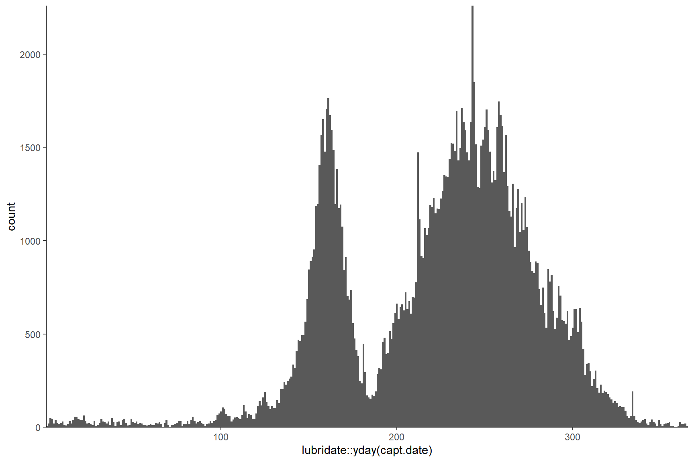
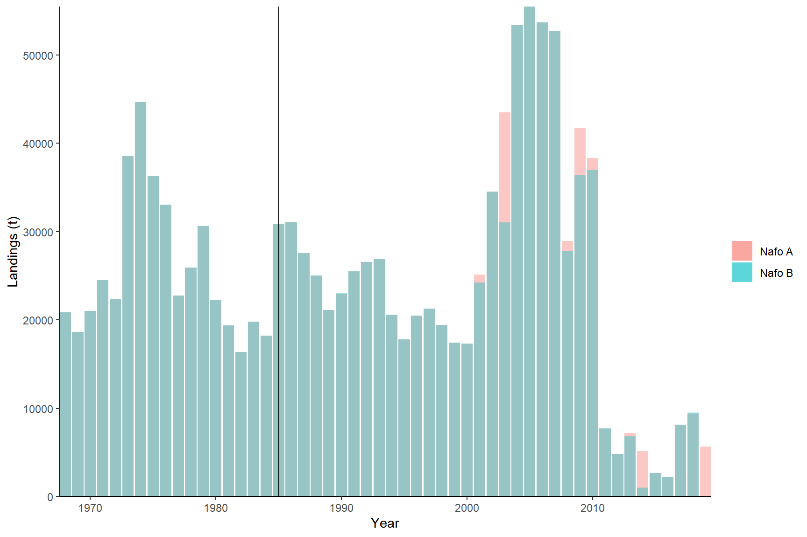
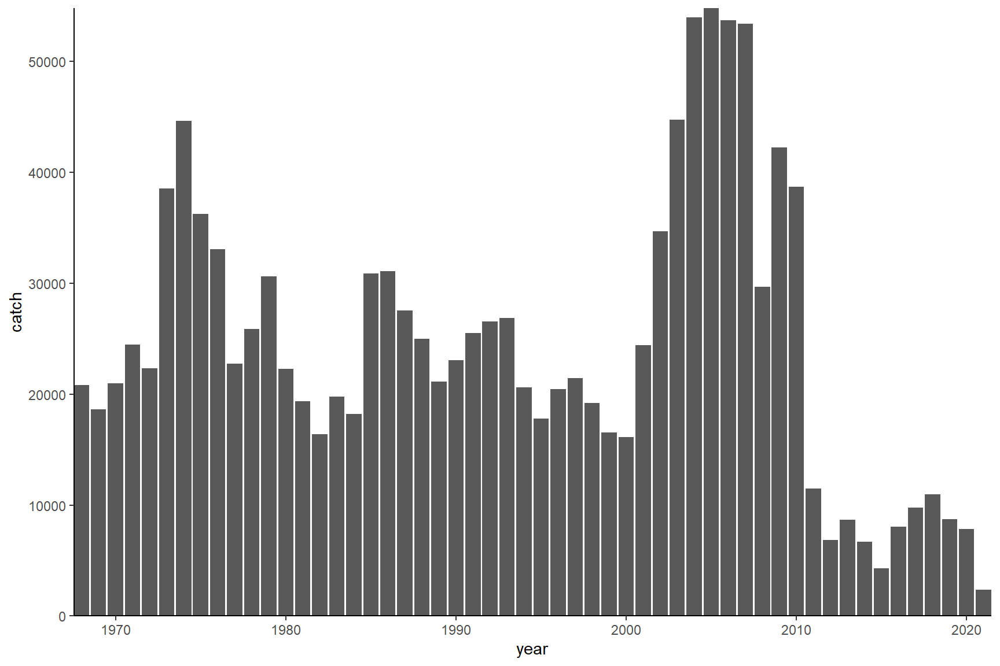

source('0.0_settings.R')sp_code <- find.species(my.species,'ziff')
kable(sp_code) | x | |
|---|---|
| Mackerel bait (fishing licence only) | 248 |
| Mackerel commercial (fishing licence) | 249 |
| Mackerel | 250 |
| Exploratory mackerel (fishing licence) | 951 |
| Mackerel head | 960 |
ziffR <- paste0(dir.rdat, "ziff.Rdata")
if(!file.exists(ziffR)){
ziff <- read.ziff(sp_code,path=dir.ziff,year=my.year,language='en')
# Species included:
with(ziff, table(species,year))
ziff <- ziff[ziff$species==250,] # code 960: few heads in 1996 code 951: wrong whelk
save(ziff, file = ziffR)
}else{
load(ziffR)
}Nafo 5Y and 5Ze are partially in the US.
# NAFO 5 = landings in Canadian EEZ (northern contingent)
kable(with(ziff, table(nafo,month))) | 1 | 2 | 3 | 4 | 5 | 6 | 7 | 8 | 9 | 10 | 11 | 12 | |
|---|---|---|---|---|---|---|---|---|---|---|---|---|
| 2G | 0 | 0 | 0 | 0 | 0 | 0 | 0 | 0 | 0 | 1 | 0 | 0 |
| 2J | 0 | 0 | 0 | 0 | 0 | 0 | 2 | 6 | 60 | 2 | 0 | 0 |
| 3K | 2 | 0 | 0 | 4 | 8 | 49 | 270 | 5823 | 9901 | 4539 | 1556 | 99 |
| 3L | 0 | 0 | 0 | 12 | 18 | 12 | 182 | 1500 | 3195 | 1701 | 585 | 20 |
| 3O | 0 | 0 | 0 | 71 | 0 | 0 | 0 | 1 | 0 | 1 | 0 | 0 |
| 3PN | 0 | 0 | 0 | 2 | 0 | 3 | 83 | 1056 | 803 | 585 | 202 | 3 |
| 3PS | 3 | 1 | 1 | 7 | 13 | 107 | 498 | 1756 | 862 | 236 | 133 | 5 |
| 4R | 0 | 0 | 1 | 7 | 24 | 98 | 1521 | 8146 | 6837 | 3925 | 403 | 2 |
| 4S | 0 | 0 | 0 | 0 | 26 | 104 | 632 | 1170 | 339 | 54 | 0 | 0 |
| 4T | 5 | 1 | 1 | 175 | 3677 | 53146 | 28262 | 58878 | 59502 | 22131 | 1714 | 15 |
| 4VN | 3 | 1 | 1 | 11 | 1085 | 3275 | 1707 | 2970 | 5283 | 3882 | 136 | 5 |
| 4VS | 0 | 3 | 57 | 2 | 58 | 31 | 20 | 46 | 7 | 8 | 5 | 0 |
| 4W | 774 | 430 | 366 | 1240 | 3932 | 1959 | 931 | 1146 | 1035 | 982 | 769 | 473 |
| 4X | 70 | 244 | 157 | 263 | 6372 | 6789 | 3581 | 6009 | 6298 | 3829 | 2998 | 120 |
| 5Y | 0 | 0 | 4 | 0 | 2 | 7 | 4 | 4 | 0 | 2 | 21 | 11 |
| 5ZE | 0 | 0 | 0 | 0 | 1 | 22 | 0 | 21 | 31 | 0 | 0 | 0 |
How many NA weights are there?
na <- cbind(all=with(ziff,table(year,useNA = 'always')),
na=with(ziff[is.na(ziff$catch),],table(year,useNA = 'always')))
kable(na)| all | na | |
|---|---|---|
| 1985 | 14767 | 2 |
| 1986 | 12769 | 1 |
| 1987 | 14234 | 6 |
| 1988 | 9872 | 5 |
| 1989 | 7392 | 6 |
| 1990 | 9654 | 2 |
| 1991 | 10577 | 8 |
| 1992 | 8498 | 6 |
| 1993 | 10246 | 3 |
| 1994 | 9993 | 33 |
| 1995 | 10199 | 90 |
| 1996 | 12636 | 49 |
| 1997 | 11238 | 50 |
| 1998 | 11051 | 36 |
| 1999 | 9107 | 35 |
| 2000 | 10137 | 20 |
| 2001 | 7466 | 26 |
| 2002 | 8935 | 17 |
| 2003 | 12322 | 39 |
| 2004 | 12760 | 19 |
| 2005 | 20695 | 74 |
| 2006 | 14757 | 23 |
| 2007 | 9453 | 39 |
| 2008 | 6601 | 10 |
| 2009 | 8323 | 6 |
| 2010 | 9570 | 5 |
| 2011 | 7094 | 21 |
| 2012 | 5866 | 37 |
| 2013 | 4999 | 18 |
| 2014 | 4465 | 24 |
| 2015 | 4772 | 26 |
| 2016 | 6819 | 27 |
| 2017 | 11416 | 50 |
| 2018 | 8590 | 23 |
| 2019 | 8045 | 457 |
| 2020 | 7894 | 317 |
| 2021 | 3509 | 42 |
| NA | 0 | 0 |
How many 0 weights are there?
with(ziff[!is.na(ziff$catch) & ziff$catch==0,],table(year))
## < table of extent 0 >Check that there is no abnormal quantity of landings on January first (possibly records for which data is unknown).
ggplot(ziff,aes(x=lubridate::yday(capt.date)))+geom_histogram(binwidth = 1)+
scale_x_continuous(expand=c(0,0))+
scale_y_continuous(expand=c(0,0))
## Warning: Removed 189026 rows containing non-finite values (stat_bin).
There are 3 special nbpc numbers that indicate landings that are not necessarily daily (e.g., monthly totals) or for which the data is only approximate. For instance, B00000 landings seems to be on the first of last of a certain month. For analyses of daily landings these might need to be excluded.
kable(with(ziff[ziff$npbc %in% c('000000', 'B00000', '190000'),], table(year,npbc))) | 000000 | 190000 | B00000 | |
|---|---|---|---|
| 1985 | 1371 | 224 | 523 |
| 1986 | 851 | 207 | 1266 |
| 1987 | 934 | 195 | 1214 |
| 1988 | 785 | 111 | 849 |
| 1989 | 685 | 184 | 953 |
| 1990 | 752 | 224 | 743 |
| 1991 | 719 | 97 | 748 |
| 1992 | 567 | 127 | 764 |
| 1993 | 463 | 99 | 800 |
| 1994 | 589 | 136 | 1020 |
| 1995 | 514 | 98 | 920 |
| 1996 | 334 | 190 | 398 |
| 1997 | 131 | 229 | 598 |
| 1998 | 13 | 0 | 359 |
| 1999 | 8 | 0 | 413 |
| 2000 | 22 | 7 | 8 |
| 2001 | 16 | 7 | 654 |
| 2002 | 19 | 6 | 256 |
| 2003 | 462 | 7 | 0 |
| 2004 | 454 | 7 | 0 |
| 2005 | 201 | 7 | 0 |
| 2006 | 838 | 0 | 0 |
| 2007 | 371 | 7 | 0 |
| 2008 | 1011 | 8 | 0 |
| 2009 | 1171 | 8 | 0 |
| 2010 | 0 | 8 | 0 |
| 2011 | 0 | 8 | 0 |
| 2012 | 0 | 8 | 0 |
| 2013 | 0 | 8 | 0 |
| 2014 | 0 | 8 | 0 |
| 2015 | 0 | 8 | 0 |
| 2016 | 0 | 8 | 0 |
| 2017 | 0 | 8 | 0 |
| 2018 | 0 | 8 | 0 |
| 2019 | 0 | 8 | 0 |
nafoAR <- paste0(dir.rdat, "nafoA.Rdata")
nafoBR <- paste0(dir.rdat, "nafoB.Rdata")
if(!all(file.exists(c(nafoAR,nafoBR)))){
### NAFO database A (annual) ---------------------------------
sp_code <- find.species(my.species,'nafoA');sp_code
nafoA <- read.nafoA(paste0(dir.nafo,'statlandA.csv'),species=sp_code[1], year=my.year)
# Canadian caught mackerel outside of my.nafo
with(nafoA[!grepl(paste0(my.nafo, collapse = "|"),nafoA$nafo)&
grepl('canada',nafoA$country,ignore.case = TRUE),] ,table(year,nafo))
# only keep my.nafo; other areas are NOT from nothern contingent (winter months in US or Europe)
nafoA <- nafoA[grepl(paste0(my.nafo, collapse = "|"),nafoA$nafo),]
table(nafoA$nafo)
save(nafoA, file = nafoAR)
### NAFO data base B (monthly) ---------------------------------
sp_code <- find.species(my.species,'nafoB');sp_code
nafoB <- read.nafoB(path=dir.nafo,species=sp_code[1],year=my.year,overwrite=FALSE) # overwrite=TRUE if new download
# Canadian caught mackerel outside of my.nafo
with(nafoB[!grepl(paste0(my.nafo, collapse = "|"),nafoB$nafo)&
grepl('canada',nafoB$country,ignore.case = TRUE),] ,table(year,nafo))
with(nafoB[!grepl(paste0(my.nafo, collapse = "|"),nafoB$nafo)&
grepl('canada',nafoB$country,ignore.case = TRUE),] ,table(month,nafo))
# only keep my.nafo (though 5Ze in summer; wouldn't they be northern contingent fish??)
nafoB <- nafoB[grepl(paste0(my.nafo, collapse = "|"),nafoB$nafo),]
table(nafoB$nafo)
# remove useless columns
nafoB <- nafoB[,c('year','month','country','nafo','gear','gear.cat','tonnage.class','prov','catch')]
save(nafoB, file = nafoBR)
}else{
load(nafoAR)
load(nafoBR)
}Nafo B is used for landings prior to 1995.
ggplot()+
geom_bar(data=nafoA,aes(x=year,y=catch,fill="Nafo A"),stat='identity',alpha=0.4)+
geom_bar(data=nafoB,aes(x=year,y=catch,fill="Nafo B"),stat='identity',alpha=0.4)+
geom_vline(xintercept=1985)+
labs(fill='',y='Landings (t)',x='Year')+
scale_x_continuous(expand=c(0,0))+ scale_y_continuous(expand=c(0,0))
## bind both
ziff$source <-'ziff'
ziff$catch <- ziff$catch/1000 # kg to tonnes
ziff$country <- 'Canada' # consistency with nafo
ziff$prov <- ifelse(ziff$prov.land=='Unknown',as.character(ziff$prov.home),as.character(ziff$prov.land))
nafoB$source <- 'nafo' # work with detailed B base
sel <- c('year','month','nafo','gear.cat','source','catch','country','prov')
catch <- rbind(ziff[ziff$year>=1995,sel], # ziff from 1995 onwards
nafoB[nafoB$year<1995,sel], # nafoB before
nafoB[nafoB$year>=1995 & nafoB$country!='Canada',sel]) # foreign post 1994
save(catch, file = paste0(dir.rdat, "catch.Rdata"))
plotCatch(catch,x='year',y='catch')
## Warning in xtfrm.data.frame(x): cannot xtfrm data frames
## Warning: Removed 1580 rows containing missing values (position_stack).